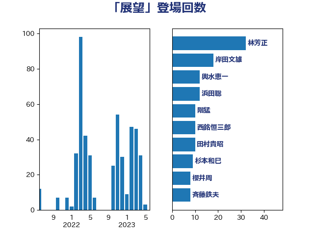

単語「展望」

| 林芳正 | 自由民主党 | 32 回 |
| 岸田文雄 | 自由民主党 | 18 回 |
| 輿水恵一 | 公明党 | 12 回 |
| 浜田聡 | NHK党 | 12 回 |
| 階猛 | 立憲民主党 | 10 回 |
| 西銘恒三郎 | 自由民主党 | 10 回 |
| 田村貴昭 | 日本共産党 | 10 回 |
| 杉本和巳 | 日本維新の会 | 9 回 |
| 櫻井周 | 立憲民主党 | 8 回 |
| 斉藤鉄夫 | 公明党 | 8 回 |
| 山添拓 | 日本共産党 | 8 回 |
| 米山隆一 | 立憲民主党 | 7 回 |
| 仁木博文 | 無所属 | 7 回 |
| 三浦信祐 | 公明党 | 7 回 |
| 野田聖子 | 自由民主党 | 5 回 |
| 松野博一 | 自由民主党 | 5 回 |
| 後藤茂之 | 自由民主党 | 5 回 |
| 野村哲郎 | 自由民主党 | 4 回 |
| 進藤金日子 | 自由民主党 | 4 回 |
| 藤岡隆雄 | 立憲民主党 | 4 回 |
| 片山さつき | 自由民主党 | 4 回 |
| 木原誠二 | 自由民主党 | 4 回 |
| 岡田直樹 | 自由民主党 | 4 回 |
| 山岸一生 | 立憲民主党 | 4 回 |
| 高村正大 | 自由民主党 | 3 回 |
| 音喜多駿 | 日本維新の会 | 3 回 |
| 鈴木貴子 | 自由民主党 | 3 回 |
| 鈴木俊一 | 自由民主党 | 3 回 |
| 笠井亮 | 日本共産党 | 3 回 |
| 稲津久 | 公明党 | 3 回 |
| 浜野喜史 | 国民民主党 | 3 回 |
| 池下卓 | 日本維新の会 | 3 回 |
| 柳ヶ瀬裕文 | 日本維新の会 | 3 回 |
| 松本剛明 | 自由民主党 | 3 回 |
| 岩田和親 | 自由民主党 | 3 回 |
| 山下芳生 | 日本共産党 | 3 回 |
| 小倉將信 | 自由民主党 | 3 回 |
| 城井崇 | 立憲民主党 | 3 回 |
| 吉田久美子 | 公明党 | 3 回 |
| 加藤勝信 | 自由民主党 | 3 回 |
| 倉林明子 | 日本共産党 | 3 回 |
| 高橋光男 | 公明党 | 2 回 |
| 青木愛 | 立憲民主党 | 2 回 |
| 阿部知子 | 立憲民主党 | 2 回 |
| 鈴木敦 | 国民民主党 | 2 回 |
| 道下大樹 | 立憲民主党 | 2 回 |
| 福田昭夫 | 立憲民主党 | 2 回 |
| 神谷裕 | 立憲民主党 | 2 回 |
| 石田昌宏 | 自由民主党 | 2 回 |
| 田村智子 | 日本共産党 | 2 回 |
| 漆間譲司 | 日本維新の会 | 2 回 |
| 浦野靖人 | 日本維新の会 | 2 回 |
| 河西宏一 | 公明党 | 2 回 |
| 末松信介 | 自由民主党 | 2 回 |
| 山崎正恭 | 公明党 | 2 回 |
| 山岡達丸 | 立憲民主党 | 2 回 |
| 山口那津男 | 公明党 | 2 回 |
| 小田原潔 | 自由民主党 | 2 回 |
| 小沼巧 | 立憲民主党 | 2 回 |
| 大口善徳 | 公明党 | 2 回 |
| 塩田博昭 | 公明党 | 2 回 |
| 勝部賢志 | 立憲民主党 | 2 回 |
| 井上哲士 | 日本共産党 | 2 回 |
| 中谷一馬 | 立憲民主党 | 2 回 |
| 中山展宏 | 自由民主党 | 2 回 |
| 上川陽子 | 自由民主党 | 2 回 |
| 鶴保庸介 | 自由民主党 | 1 回 |
| 鬼木誠 | 立憲民主党 | 1 回 |
| 高木宏壽 | 自由民主党 | 1 回 |
| 長谷川英晴 | 自由民主党 | 1 回 |
| 長峯誠 | 自由民主党 | 1 回 |
| 鈴木義弘 | 国民民主党 | 1 回 |
| 野間健 | 立憲民主党 | 1 回 |
| 野田国義 | 立憲民主党 | 1 回 |
| 西村康稔 | 自由民主党 | 1 回 |
| 落合貴之 | 立憲民主党 | 1 回 |
| 萩生田光一 | 自由民主党 | 1 回 |
| 菅直人 | 立憲民主党 | 1 回 |
| 茂木敏充 | 自由民主党 | 1 回 |
| 若林健太 | 自由民主党 | 1 回 |
| 舞立昇治 | 自由民主党 | 1 回 |
| 自見はなこ | 自由民主党 | 1 回 |
| 羽生田俊 | 自由民主党 | 1 回 |
| 緑川貴士 | 立憲民主党 | 1 回 |
| 紙智子 | 日本共産党 | 1 回 |
| 竹詰仁 | 国民民主党 | 1 回 |
| 竹内譲 | 公明党 | 1 回 |
| 窪田哲也 | 公明党 | 1 回 |
| 穂坂泰 | 自由民主党 | 1 回 |
| 石川香織 | 立憲民主党 | 1 回 |
| 石川昭政 | 自由民主党 | 1 回 |
| 石川大我 | 立憲民主党 | 1 回 |
| 石原正敬 | 自由民主党 | 1 回 |
| 石井章 | 日本維新の会 | 1 回 |
| 石井啓一 | 公明党 | 1 回 |
| 田村まみ | 国民民主党 | 1 回 |
| 田中健 | 国民民主党 | 1 回 |
| 猪口邦子 | 自由民主党 | 1 回 |
| 片山大介 | 日本維新の会 | 1 回 |
| 清水貴之 | 日本維新の会 | 1 回 |
| 浜地雅一 | 公明党 | 1 回 |
| 浅野哲 | 国民民主党 | 1 回 |
| 津島淳 | 自由民主党 | 1 回 |
| 江田憲司 | 立憲民主党 | 1 回 |
| 永岡桂子 | 自由民主党 | 1 回 |
| 水岡俊一 | 立憲民主党 | 1 回 |
| 横山信一 | 公明党 | 1 回 |
| 森本真治 | 立憲民主党 | 1 回 |
| 森山浩行 | 立憲民主党 | 1 回 |
| 森屋隆 | 立憲民主党 | 1 回 |
| 梶原大介 | 自由民主党 | 1 回 |
| 柴愼一 | 立憲民主党 | 1 回 |
| 柳本顕 | 自由民主党 | 1 回 |
| 柘植芳文 | 自由民主党 | 1 回 |
| 枝野幸男 | 立憲民主党 | 1 回 |
| 木村英子 | れいわ新選組 | 1 回 |
| 朝日健太郎 | 自由民主党 | 1 回 |
| 有村治子 | 自由民主党 | 1 回 |
| 星北斗 | 自由民主党 | 1 回 |
| 早稲田ゆき | 立憲民主党 | 1 回 |
| 日下正喜 | 公明党 | 1 回 |
| 新谷正義 | 自由民主党 | 1 回 |
| 斎藤アレックス | 国民民主党 | 1 回 |
| 打越さく良 | 立憲民主党 | 1 回 |
| 志位和夫 | 日本共産党 | 1 回 |
| 庄子賢一 | 公明党 | 1 回 |
| 平林晃 | 公明党 | 1 回 |
| 市村浩一郎 | 日本維新の会 | 1 回 |
| 岬麻紀 | 日本維新の会 | 1 回 |
| 山谷えり子 | 自由民主党 | 1 回 |
| 山田美樹 | 自由民主党 | 1 回 |
| 山本博司 | 公明党 | 1 回 |
| 山下貴司 | 自由民主党 | 1 回 |
| 尾崎正直 | 自由民主党 | 1 回 |
| 小野田紀美 | 自由民主党 | 1 回 |
| 宮本徹 | 日本共産党 | 1 回 |
| 宮崎勝 | 公明党 | 1 回 |
| 宗清皇一 | 自由民主党 | 1 回 |
| 安江伸夫 | 公明党 | 1 回 |
| 守島正 | 日本維新の会 | 1 回 |
| 大島敦 | 立憲民主党 | 1 回 |
| 堂込麻紀子 | 無所属 | 1 回 |
| 堀場幸子 | 日本維新の会 | 1 回 |
| 坂本哲志 | 自由民主党 | 1 回 |
| 土田慎 | 自由民主党 | 1 回 |
| 古賀篤 | 自由民主党 | 1 回 |
| 北神圭朗 | 無所属 | 1 回 |
| 務台俊介 | 自由民主党 | 1 回 |
| 加田裕之 | 自由民主党 | 1 回 |
| 伊藤岳 | 日本共産党 | 1 回 |
| 今井絵理子 | 自由民主党 | 1 回 |
| 井原巧 | 自由民主党 | 1 回 |
| 中野洋昌 | 公明党 | 1 回 |
| 中西祐介 | 自由民主党 | 1 回 |
| 中川貴元 | 自由民主党 | 1 回 |
| 中川正春 | 立憲民主党 | 1 回 |
| 中川康洋 | 公明党 | 1 回 |
| 中川宏昌 | 公明党 | 1 回 |
| 中司宏 | 日本維新の会 | 1 回 |